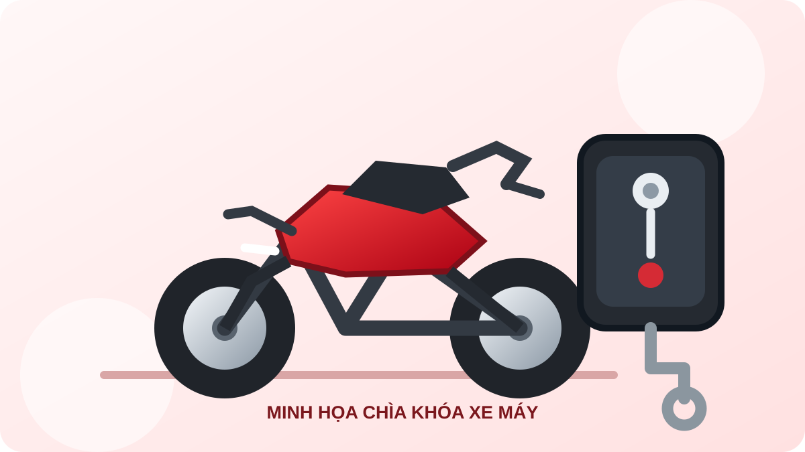

Làm chìa khóa Suzuki Raider tại Cẩm Phả

Khi mất chìa Suzuki Raider hoặc cần trao đổi về chìa khóa dự phòng, bạn nên cung cấp đúng phiên bản xe và tình trạng hiện tại. Cấu tạo khóa có thể khác nhau theo đời xe và phiên bản, vì vậy cần kiểm tra thông tin thực tế trước khi xác nhận phương án hỗ trợ.
THỢ KHÓA LƯU ĐỘNG tiếp nhận yêu cầu trao đổi tại Cẩm Phả. Vui lòng gọi trước để xác nhận khả năng xử lý, lịch hẹn và chi phí dự kiến.
1. Khi mất chìa khóa Suzuki Raider, nên làm gì?
- Giữ xe ở vị trí an toàn, hạn chế để xe không có người trông coi.
- Kiểm tra xem còn chìa dự phòng hay không.
- Ghi lại đời xe, phiên bản và mô tả loại chìa đang sử dụng nếu biết.
- Không tự ý tháo ổ khóa, cắt dây hoặc đấu nối điện khi chưa có chuyên môn.
2. Thông tin nên chuẩn bị trước khi gọi
Để trao đổi rõ hơn, bạn có thể chuẩn bị hãng xe, tên dòng Suzuki Raider, đời xe nếu biết, vị trí xe tại Cẩm Phả và tình trạng mất một chìa hay mất toàn bộ chìa. Nếu thuận tiện, ảnh tổng thể xe hoặc ảnh chìa còn lại (nếu có) có thể giúp mô tả tình huống; tránh đăng công khai giấy tờ và dữ liệu cá nhân.
3. Trường hợp cần làm chìa mới hoặc chìa dự phòng
Phương án phụ thuộc phiên bản xe, cấu tạo ổ khóa và tình trạng hệ thống hiện tại. Không nên mặc định mọi đời Raider dùng chung một loại chìa hoặc quy trình. Hãy xác nhận trước xem trường hợp xe của bạn có được tiếp nhận hay không, cần giấy tờ gì để xác minh quyền sử dụng hợp pháp và dự kiến mất bao lâu.
4. Chi phí làm chìa khóa Suzuki Raider
Chi phí không có một mức cố định cho mọi trường hợp. Giá có thể phụ thuộc đời xe, loại chìa, tình trạng ổ khóa, việc còn chìa mẫu hay đã mất hết và vị trí hỗ trợ. Nên hỏi rõ phí kiểm tra, di chuyển (nếu có) và chi phí dự kiến trước khi đồng ý thực hiện.
Câu hỏi thường gặp
Mất hết chìa Suzuki Raider có làm lại được không?
Khả năng thực hiện tùy đời xe và tình trạng khóa. Hãy cung cấp thông tin xe để được kiểm tra khả năng tiếp nhận trước khi đặt lịch.
Có nên tự tháo ổ khóa để mang đi làm chìa?
Không nên tự tháo nếu không có chuyên môn. Việc tháo sai có thể làm hỏng chi tiết hoặc phát sinh vấn đề khác; hãy trao đổi phương án kiểm tra trước.
Cần xác nhận gì trước khi thợ di chuyển?
Hãy xác nhận khả năng hỗ trợ đúng phiên bản xe, giấy tờ cần chuẩn bị, thời gian dự kiến và chi phí liên quan.
Gọi 090 402 6204 để trao đổi nhu cầu, xác nhận lịch và phương án phù hợp.